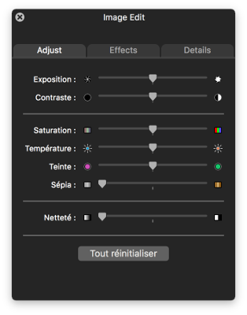
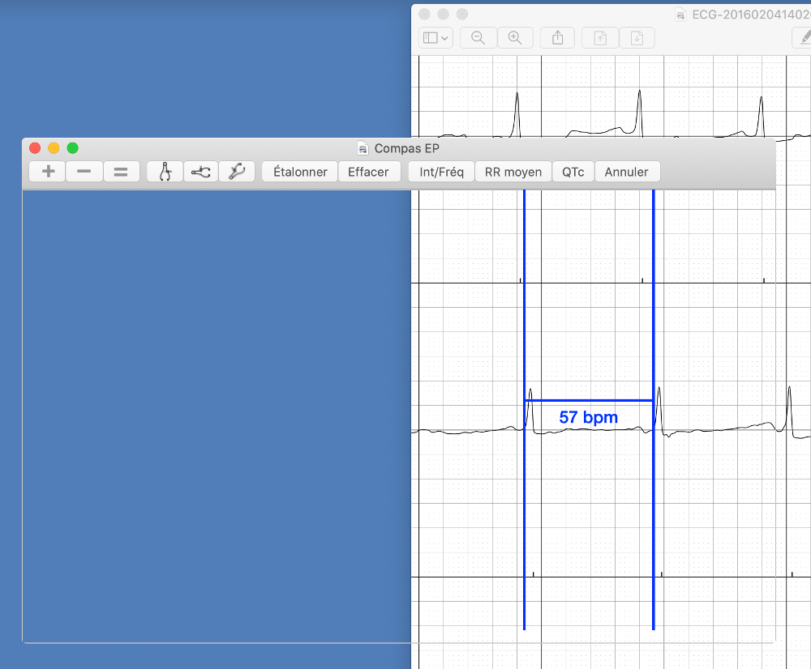

Images
Images
Parmi les images sont des formats typiques comme JPG et PNG ansi que les fichiers PDF. Quand vous démarrez Compas EP un exemple ECG est chargé. Pour charger votre images ECG vous utilisez l’une des techniques suivantes.
Charger une image
Ouvrir un fichier
Utiliser la commande de menu Fichier | Ouvrir ou Fichier | Ouvrir un élément récent pour choisir une image enregistrée sur votre ordinateur.
Glisser-déposer
Vous pouvez glisser-déposer un fichier d’image sur la fênetre d’application et il chargera.
Menu par clic-droit
Même quand Compas EP n’est pas ouvert, vous pouvez utiliser le menu par clic-droit pour ouvrir un fichier d’image. Le menu par clic-droit est ouvert soit par un clic-droit sur un fichier si vous avez une souris ou en utilisant le bouton gauche de souris avec la touche contrôle, ou, si vous avez un trackpad, en le tappant avec deux droigts. Après la sélection de Ouvrir avec une liste d’applications apparaîtra. Compas EP sera dans la liste d’applications qui peut ouvrir l’image. Cliquer-le et l’application commencera avec l’image chargée. Cette méthode est très utile en ouvrant de fichiers joints.
PDFs à pages multiples
Quand les fichiers PDF ont plus d'une page, l'application affichera la première page au début. Vous pouvez naviguer sur les autres pages avec la sélection des touches ^P et ^N ou en utilisant les commandes de menu Image | Page précédente et Image | Page suivante. Naviguer à une page specifique en utilisant la commande de menu Image | Aller à la page.
Charger un ECG d’/AliveCor™ Kardia/
Les ECGs d’/AliveCor/ peuvent être enregistrés comme des fichiers PDF. Charger-les avec les méthodes précédentes.
Ajustement de l’image
Déplacer l’image
Avec un trackpad, vous pouvez réajuster la position de l’image en utilisant le déroulement avec deux droigts. Vous pouvez aussi déplacer une image en utilisant une souris.
Rotation
Si l’image d’ECG est tournée ou inclinée, utiliser la commande de menu Image | Rotation pour la corriger. Vous pouvez pivoter l’image par les incréments de 90°, 1°, ou 0,1° dans les deux directions. Les raccourcis clavier de rotation sont utiles. Important: Vous devez pivoter l’image avant l’étalonnage des compas et avant que vous fassiez des mesures. Quand une image a éte étalonnée, la rotation affectera l’exactitude de l’étalonnage. Pour cette raison, vous pouvez seulement tourner une image avant l’étalonnage. Si vous devez tourner l’image après l’étalonnage, vous devrez effacer l’étalonnage (en utilisant Effacer sur la barre d’outils ou la commande de menu Compas | Effacer) avant que vous puissiez la tourner.
Zoom
Si vous avez un trackpad, vous pouvez pincer pour zoomer. Vous pouvez aussi utiliser la barre d’outils Zoom pour zoomer en avant et en arrière ou pour rétablir l’image à sa dimension originale. Le zoom est aussi disponible dans le menu Image. Noter que l'étalonnage reste correct quand l'image est zoomée. Il est inutile de réétalonner les compas après zoomer.
Éditeur d’image
Utiliser la commande de menu Image | Éditeur d’image pour ouvrir l’éditeur d’image. Cet éditeur a beaucoup d’options pour modifier l’apparence de l’ECG, p.e. le changement de couleur ou de contraste.

Figure 1: Éditeur d’image
Fênetre transparente
Quel est le mode de fênetre transparente?
Parfois il est plus facile d’ouvrir une image ou un fichier PDF en utilisant une autre application, p.e. votre navigateur web, et puis d’effectuer les mesures directement sur cette image. Compas EP permit cela en utilisant le mode de fênetre transparente. Dans ce mode, la fênetre principale est transparente, permettant la mesure de ce qui est sous la fênetre avec les compas. Le mode de fênetre transparente ressemble à ça:

Figure 2: le mode de fênetre transparente
L’activation du mode de fênetre transparente
Vouv pouvez rapidement basculer entre la fenêtre transparente et une image en utilisant la commande de menu Image | Fenêtre transparente ou la touche Control-H. Si vous voulez que l'application démarre avec une fenêtre transparent, utilisez la commande de menu Compas EP | Préférences… pour montrer la boîte de dialogue Préférences. Cocher la case Fênetre transparente pour changer au mode de fênetre transparente. Décocher la case pour retourner au mode d’image normale.
Les prudences en utilisant le mode de fênetre transparente
Quand vous chargez une image dans le mode d’image normale et étalonnez les compas, l’application va automatiquement ajuster le facteur d’étalonnage en zoomant l’image. Dans le mode de fênetre transparente, ce n’est pas possible de l’ajuster automatiquement. Il faut réétalonner les compas si vous zoomez l’image avec un program externe. Noter aussi qu’en utilisant le mode plein écran, le mode de fênetre transparente ne marche pas. Enfin, si vous charger un fichier dans le mode de fênetre transparente, une boîte de dialogue apparaîtra qui se demande si vous voulez sortir le mode de fênetre transparente pour le charger.
Enregistrer une image
Prendre une capture d’écran pour enregistrer une image de Compas EP. Prendre une capture d’écran du bureau complet en appuyant Commande-Maj-3. Appuyer Commande-Maj-4 et puis la touche Espace pour prendre une capture d’écran d’une fênetre. Cliquer l’icône de camera sur la fênetre de Compas EP. Appuyer la touche Échap pour annuler une capture d’écran.